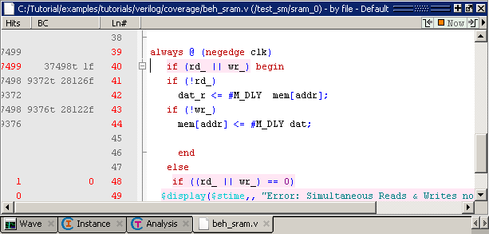

Coverage Statistics in the Source Window
Procedure
- Double-click beh_sram.v in the Files window to open a source code view in the Source window.
- Scroll
the Source window to view the code shown in Figure 1. Figure 1. Coverage Statistics in the Source Window

The Source window includes a Hits and a BC column to display statement Hits and Branch Coverage, respectively. In Figure 1, the mouse cursor is hovering over the source code in line 41. This causes the coverage icons Hits and BC columns to change to coverage numbers. Table 1 describes the various coverage icons.
Table 1. Coverage Icons in the Source Window Icon
Description
green checkmark
Indicates a statement that has been executed
green E
Indicates a line that has been excluded from code coverage statistics
red X
An X in the Hits column indicates a missed (unexecuted) statement (XS), branch (XB), or condition (XC). An X in the BC column indicates a missed true (XT) or false (XF) branch.
- Select .
The coverage icons in the Hits and BC columns are replaced by execution counts on every line. Red numbers indicate missed coverage in that line of code. An ellipsis (...) is displayed whenever there are multiple statements on the line.
Figure 2. Coverage Numbers Shown by Hovering the Mouse Pointer - Select again to uncheck the selection and return to icon display.